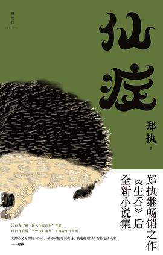

《仙症》

总体观点
疯癫是清醒者在病态现实中唯一的避难所：在大工业体系解体与价值崩塌的转型阵痛期，王战团式的‘神经病’以不合时宜的执拗，坚守着普通人早已丢弃的童真、理想主义与人格洁癖。
郑执笔下的东北叙事剥离了猎奇与怀旧滤镜，直面铁西区工人阶级家庭骨血里的创伤与代际冲突：贫困并未消磨人性的温度，反而在粗鄙暴烈的方言撕扯中孕育出野蛮生长的温情。
小说集贯穿着对宿命的决绝反叛与和解：每个人体内都潜伏着一只不合时宜的‘刺猬’，唯有接纳自身残缺并拒绝被庸俗生活‘卡住’，才能在漫天风雪中打捞起生命的自我主权。
核心观点
-
1. 王战团的疯癫哲学：拒绝被庸俗生活卡住的刺猬精神
在世俗眼中大姑父王战团是不可理喻的胡话连篇者，但他对潜艇口哨与诗意飞翔的执念，构成了对抗工业锈带虚无最神圣的反抗。
当全家人为女儿出嫁宴席上的失控而羞愤难当、甚至请神婆驱邪时，王战团只是一脸平静地在烟囱顶端模仿大雁向往浩瀚太平洋。 -
2. 两代边缘人的精神盟约：结巴少年与疯子叔父的隐秘共谋
在充满打骂与规训的家庭环境中，身体残缺（口吃）的‘我’与精神异端的王战团形成了互为救赎的精神同盟，照亮彼此幽暗的青春。
王战团在全家人把‘我’当作智障送医时，认真地对少年说‘你不是结巴，你只是说话比他们想得快’，一句话拯救了少年的自尊。 -
3. 重工业废墟上的穷鬼慈悲：粗粝外表下的笨拙深情
艳粉街的居民们过着捉襟见肘的日子，他们满嘴污言秽语、动辄拳脚相向，但在生死关头却展现出毫无道德洁癖的真诚相濡以沫。
《森中有林》中两代工人家庭在连环凶案与下岗风波中，用一把破旧扳手和几张浸透汗水的大团结默默替对方撑起破败门面。 -
4. 洗浴中心里的微型市民社会：坦诚相见的肉身浮世绘
在《凯旋门》等篇章中，沈阳街头的洗浴中心成为阶级消弭的戏剧舞台，形形色色的疲惫肉身在温热池水中展露未被时代吞噬的尊严。
前劳模大爷与刑满释放人员赤身裸体泡在同一个池子里谈论昔日车间辉煌，热气氤氲中洗褪了世俗身份的贵贱。 -
5. 通灵与迷信背后的精神避难：用神鬼幻象缝合破碎现实
东北民俗中的‘出马仙’与请神看病，本质上是底层平民在面对现代医疗昂贵与生活绝境时，为无法安顿的心灵创伤寻求的集体心理疗愈。
大姑为了给王战团治病倾家荡产请白仙扎针，屋子里弥漫的香火味实际上是全家人对抗漫长绝望的最后稻草。
全书思维导图 · 知识脉络树
全书结构
-
第一篇：《仙症》（王战团的疯癫与神圣自由）
全书核心名篇，以口吃少年周正的视角追忆大姑父王战团的一生；记录海军潜艇创伤、大雁指挥、黄仙驱魔与考学突围，奠定全书反叛基调。
周正面对扎满银针的驱魔现场决绝高呼‘我不原谅’，并在成年后登上海轮眺望太平洋，完成对王战团精神遗嘱的践行。 -
第二篇：《森中有林》（两个工人家庭的沉沦与救赎）
中篇力作；以两代工人的命案交织为线索，还原老国企铁西工厂改制大潮中普通工人被时代列车抛下后的迷茫、罪愆与父子情深。
父亲在冰封的浑河边等待逃亡儿子归来，怀里揣着一包舍不得抽的压扁红梅烟，在零下二十度的严寒里凝固成苍凉雕像。 -
第三篇：《蒙地卡罗食人记》（少年游荡与青春残酷物语）
讲述九十年代末沈阳地下商场‘蒙地卡罗’里的不良少年日常；聚焦荷尔蒙躁动、录像厅黑幕与暴力萌芽中的纯真失落。
少年在投币街机前为了一包辣条大打出手，却在昏暗防火通道里为一只冻死的小流浪狗默默举行土葬仪式。 -
第四篇：《凯旋门》（大众澡堂里的市民浮世绘）
将镜头对准沈阳街头老旧洗浴中心；通过搓澡师傅、落魄老板与常客的碎语闲聊，勾勒出北方市民阶层在经济滑坡中的乐观与苦涩。
搓澡工老李一边用熟练手法给客人搓泥，一边神采飞扬地回忆当年在万人大厂表彰大会上披红挂彩的荣耀过往。 -
第五篇：《他心通》（中年困局与灵修荒诞）
描写当代中年城市男性在职场焦虑与婚姻危机下的精神异化，通过对灵修班与超感官知觉的迷信，反思现代性精神危机。
男主角在昂贵的静修营里苦苦冥想他人的心思，最终在深夜妻子平淡的鼾声中猛然意识到自己对身边挚爱的彻底无知。 -
第六篇与后记：《访客》与《穷鬼的慈悲》（写作缘起与时代回望）
收录暴雪夜短篇《访客》及作者自序《穷鬼的慈悲》；郑执真情回望沈阳艳粉街的成长印记，阐释‘小说家要替那些不会说话的人发声’的文学抱负。
郑执写道：那座曾经冒着黑烟的烟囱虽然倒下了，但生活在烟囱下那些挺起腰杆过日子的人，永远不该在历史中失声。